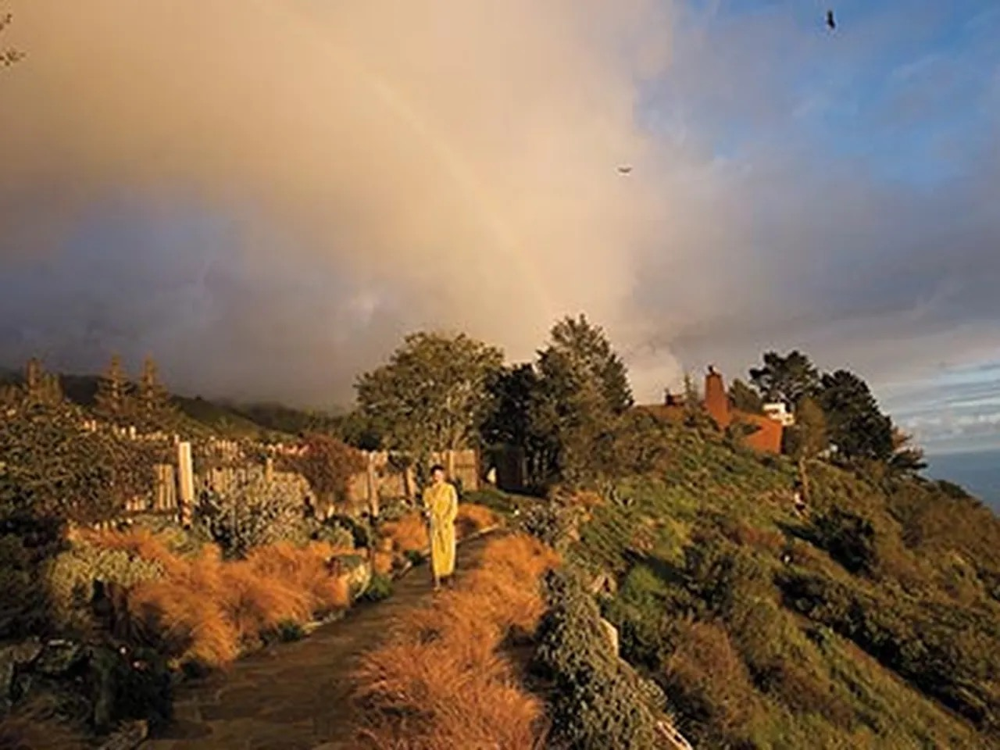
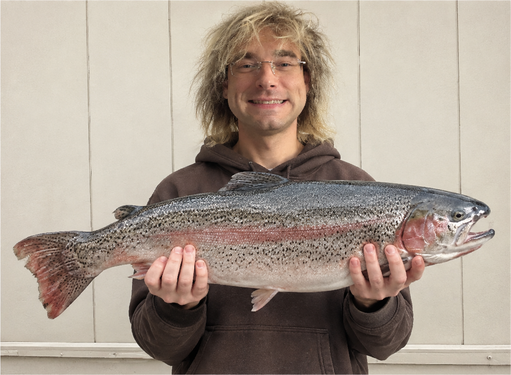

GOOD GARDENER
Clothing, Community & Good Gardeners of the World
Honoring people who bring things to life
Store Highlights
A Place for People Who Care About Their Craft
Welcome to Good Gardener! A good gardener is someone who does a good job at what they do. The best job. Someone who brings things to life, with care, purpose, and dedication.
Artists, makers, teachers, and neighbors. Whatever their field, good gardeners take their work seriously and give it everything they have.
We are a nonprofit that makes clothes, helps the community, and honors good gardeners around the world. Every month, we celebrate someone doing exceptional work.
Good Gardener Clothing
Made for Good Work
Carry the idea with you
For the studio and the everyday
For people who care

Good Gardener of the Month
OUR FIRST HONOREE
Good Work Deserves Recognition
One good gardener. Every month.
People dedicated to what they do.
Dependable and strong.
A good heart, a good attitude,
and a great smile.
Good Gardener celebrates excellence, care, and dedication. You do not have to work in a garden to bring something to life.